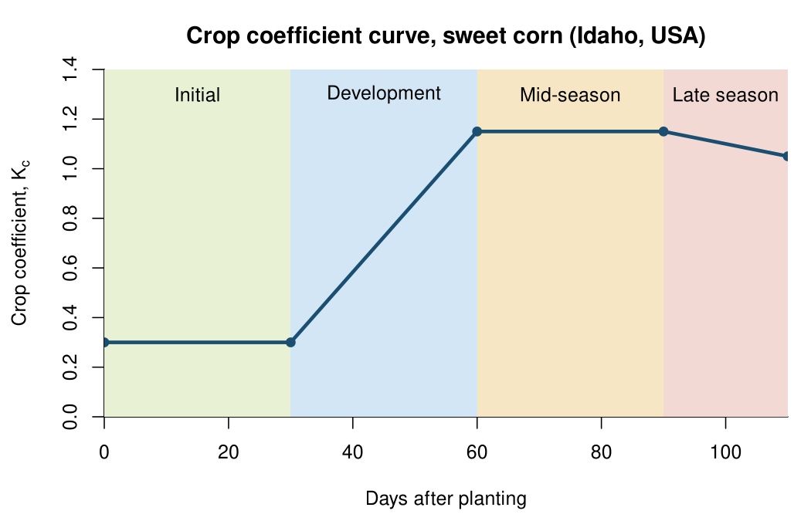
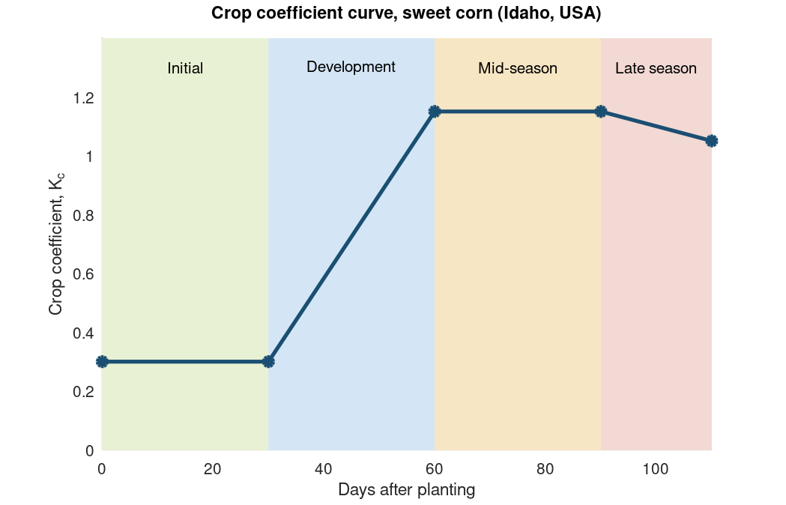

Chapter 5 · Energy Cycle and Evapotranspiration
Crop coefficient curve, sweet corn (Idaho, USA)
Crop coefficient Kc through four growth stages.
Source: Chapter 5 draft; data from "Fig # - CropCoefficientCurve.xlsx"
The five breakpoints are embedded in the script; the author's workbook contains duplicate rows.
No external data file: values are small and embedded in the code.

Code: crop_coefficient.py · image: figure_python.png
"""Chapter 5 - Crop coefficient curve for sweet corn (Idaho, USA).
Data: 'Fig # - CropCoefficientCurve.xlsx' (days, Kc). The spreadsheet repeats several points (e.g. day 30 and 60 appear
twice); the duplicates are removed here. Stages follow the draft: initial, development, mid-season, late-season.
Reference: FAO Irrigation and Drainage Paper 56 (https://www.fao.org/4/x0490e/x0490e0b.htm)."""
import matplotlib.pyplot as plt
days = [0, 30, 60, 90, 110]
kc = [0.30, 0.30, 1.15, 1.15, 1.05]
stages = [(0, 30, "Initial", "#e8f1d4"), (30, 60, "Development", "#d3e6f5"),
(60, 90, "Mid-season", "#f7e6c4"), (90, 110, "Late season", "#f3d9d4")]
fig, ax = plt.subplots(figsize=(7, 4.5))
for a, b, name, c in stages:
ax.axvspan(a, b, color=c, lw=0)
ax.text((a + b) / 2, 1.3, name, ha="center", fontsize=10)
ax.plot(days, kc, "-o", color="#1b4f72", lw=2.5)
ax.set_xlim(0, 110); ax.set_ylim(0, 1.4)
ax.set_xlabel("Days after planting"); ax.set_ylabel("Crop coefficient, $K_c$")
ax.set_title("Crop coefficient curve, sweet corn (Idaho, USA)")
ax.spines[["top", "right"]].set_visible(False)
fig.tight_layout(); fig.savefig("figure_python.png", dpi=150)

Code: crop_coefficient.R · image: figure_r.png

# Chapter 5 - Crop coefficient curve for sweet corn (Idaho, USA). Data: 'Fig # - CropCoefficientCurve.xlsx'
# (duplicate rows in the spreadsheet removed). Reference: FAO Irrigation and Drainage Paper 56.
days <- c(0, 30, 60, 90, 110); kc <- c(0.30, 0.30, 1.15, 1.15, 1.05)
st <- data.frame(a = c(0, 30, 60, 90), b = c(30, 60, 90, 110),
name = c("Initial", "Development", "Mid-season", "Late season"),
col = c("#e8f1d4", "#d3e6f5", "#f7e6c4", "#f3d9d4"))
png("figure_r.png", width = 1050, height = 675, res = 150)
par(mar = c(4.5, 4.5, 3, 1), bty = "l")
plot(NA, xlim = c(0, 110), ylim = c(0, 1.4), xaxs = "i", yaxs = "i", xlab = "Days after planting",
ylab = expression(paste("Crop coefficient, ", K[c])), main = "Crop coefficient curve, sweet corn (Idaho, USA)")
for (i in 1:4) { rect(st$a[i], 0, st$b[i], 1.4, col = st$col[i], border = NA); text((st$a[i] + st$b[i]) / 2, 1.3, st$name[i]) }
lines(days, kc, lwd = 3, col = "#1b4f72"); points(days, kc, pch = 19, col = "#1b4f72")
dev.off()

Code: crop_coefficient.m · image: figure_matlab.png

% Chapter 5 - Crop coefficient curve for sweet corn (Idaho, USA). Data: 'Fig # - CropCoefficientCurve.xlsx'
% (duplicate rows in the spreadsheet removed). Reference: FAO Irrigation and Drainage Paper 56.
days = [0 30 60 90 110]; kc = [0.30 0.30 1.15 1.15 1.05];
a = [0 30 60 90]; b = [30 60 90 110];
names = {'Initial','Development','Mid-season','Late season'};
cols = [0.91 0.945 0.83; 0.83 0.9 0.96; 0.97 0.9 0.77; 0.95 0.85 0.83];
fig = figure('Position', [100 100 700 450]); hold on
for i = 1:4
patch([a(i) b(i) b(i) a(i)], [0 0 1.4 1.4], cols(i,:), 'EdgeColor', 'none');
text((a(i)+b(i))/2, 1.3, names{i}, 'HorizontalAlignment', 'center');
end
plot(days, kc, '-o', 'Color', [0.106 0.31 0.447], 'LineWidth', 2.5, 'MarkerFaceColor', [0.106 0.31 0.447]);
xlim([0 110]); ylim([0 1.4]); box off
xlabel('Days after planting'); ylabel('Crop coefficient, K_c');
title('Crop coefficient curve, sweet corn (Idaho, USA)');
print(fig, '-dpng', '-r150', 'figure_matlab.png');